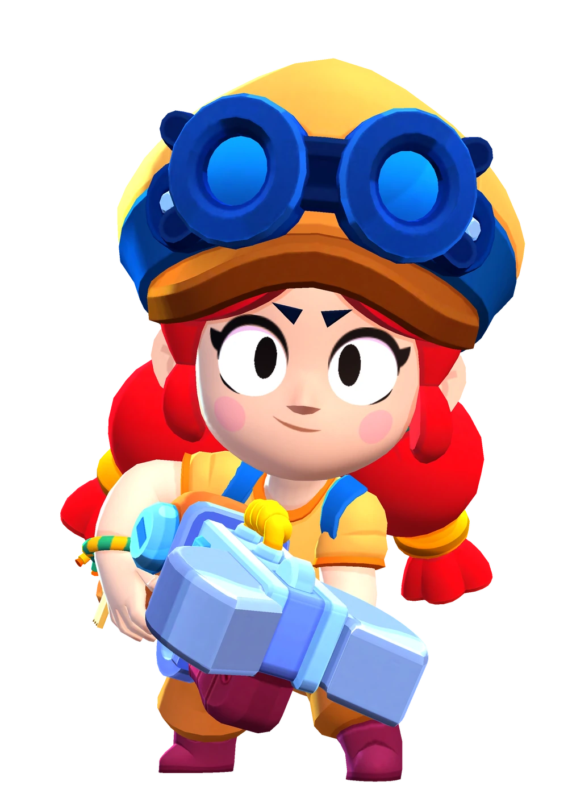

¿Quién es Jessie?
Jessie es una niña prodigio capaz de construir armas y gadgets a partir de lo que se encuentra en la chatarrería. Quizá algún día su madre, Pam, se dé cuenta de lo que es capaz.
Jessie es una Brawler de rareza Superespecial que tiene una salud moderadamente baja, un daño moderado y una velocidad de recarga normal. Su ataque es un orbe eléctrico que rebota entre los enemigos. Su súper coloca a Scrappy, una torreta con una vida y una producción de daño moderadas que sobresale en el ataque, la distracción y la defensa.
|  |
NIVEL DE FUERZA 11 |
Sus gadgets
 |
BUJÍA: La torreta de Jessie lanza una onda sísmica que ralentiza a todos los rivales que se encuentren dentro del área de efecto. |
 |
INTENSIFICADOR: La velocidad de ataque de la chatarreta se duplica durante 5 segundos. |
Sus habilidades estelares
 |
ENERGIZANTE: Jessie puede recuperar 1060 puntos de salud de su torreta con solo dispararle. |
 |
REBOTE ELECTRIZANTE: La chatarreta dispara esferas de energía que rebotan entre los enemigos. Tras cada rebote, el alcance de las esferas aumenta un 51% del normal. |
Su hipercarga
CHATARRERA 2.0: La torreta de Jessie tiene un 50% más de vida e inflige un 20% más de daño. |
 Braian Arancibia
Braian Arancibia Aya El Baarar
Aya El Baarar